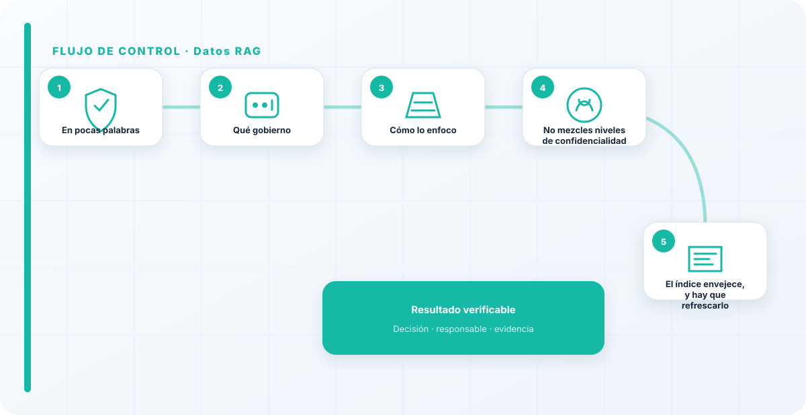
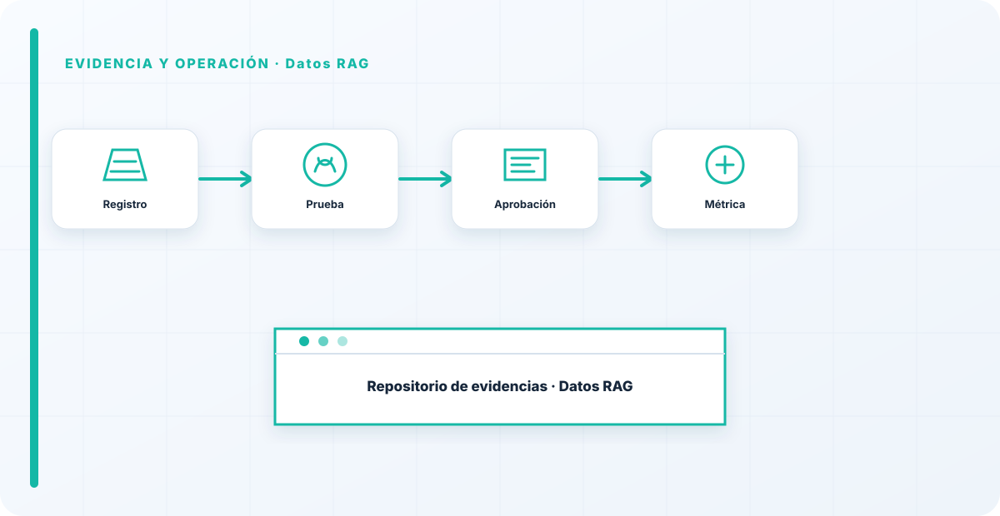

En pocas palabras
En un RAG, gobernar el dato es decidir qué entra al índice y quién puede sacarlo. De eso —no del modelo— depende que tu RAG sea un asistente útil o una fuga de datos con buena interfaz. El error clásico, volcar todo al índice por comodidad, convierte el sistema en un buscador de datos confidenciales para quien no debería verlos. La seguridad del RAG es, en el fondo, gobierno del dato aplicado a un sitio nuevo.
Qué gobierno
Qué documentos entran al índice —clasificados y con permiso, no todo lo que hay en un disco—, quién puede recuperar qué, y cada cuánto se refresca el índice para no servir datos obsoletos. Cada una de esas decisiones es un control de seguridad disfrazado de decisión de datos.
Y son controles que la gente aplica sin problema a un sistema de ficheros pero que, no sé por qué, olvida en cuanto hay un modelo de por medio, como si el LLM eximiera de los permisos.
Cómo lo enfoco
Clasifico antes de indexar y aplico permisos a la recuperación, exactamente igual que a cualquier repositorio de ficheros. Es la cara de gobierno del dato de la seguridad RAG, y se apoya en la observabilidad para saber qué se recuperó en cada respuesta.
La regla es simple: los permisos no desaparecen porque haya un modelo por medio. Si un usuario no podía ver un documento antes, tampoco debería poder sacarlo preguntándoselo al RAG.

No mezcles niveles de confidencialidad
Un patrón que evita muchos incidentes: no mezclar en un mismo índice documentos de niveles de confidencialidad muy distintos si no puedes aplicar permisos finos a la recuperación. Si en el mismo sitio conviven lo público y lo muy sensible y cualquiera puede preguntar, tarde o temprano el RAG servirá lo sensible a quien no debía.
Separar por sensibilidad, o aplicar permisos de verdad a la recuperación, es lo que impide que una pregunta inocente devuelva algo confidencial.
El índice envejece, y hay que refrescarlo
Un aspecto del gobierno del dato en RAG que se olvida: el índice no es eterno. Los documentos cambian, se actualizan políticas, caducan datos, y un índice que no se refresca empieza a servir respuestas basadas en información vieja con total seguridad y aplomo. El RAG no sabe que su fuente está obsoleta; responde igual de convencido con un dato de hace dos años que con el de ayer.
Por eso el gobierno incluye una política de frescura: cada cuánto se reindexan las fuentes, cómo se retiran los documentos caducados, y cómo se evita que conviva una versión vieja y una nueva del mismo documento confundiendo al modelo. Un índice desactualizado es una fuente de errores silenciosos.
Casi todos los RAG que audito fallan aquí: se indexó todo por comodidad y no hay permisos. Un RAG mal gobernado no necesita que lo ataquen para filtrar datos; los filtra solo, a quien pregunte. La seguridad de tu RAG es, en el fondo, la calidad de tu gobierno del dato: sin clasificación ni permisos, la arquitectura da igual.
Los errores que veo una y otra vez
- Indexar todo sin clasificar.
- No aplicar permisos a la recuperación.
- No refrescar el índice y servir datos viejos.
- Mezclar niveles de confidencialidad en un mismo índice.
- Tratar el índice como carpeta interna inofensiva.
Cómo lo llevaría a un entorno real
Cuando aterrizo datos rag en una organización, no empiezo por comprar una herramienta ni por redactar veinte páginas. Empiezo por dibujar qué ocurre hoy: quién solicita el cambio, quién lo aprueba, qué sistemas intervienen, qué datos cruzan el proceso y quién se entera cuando algo falla. Ese dibujo suele descubrir más problemas que cualquier checklist. En gobierno del dato, lo peligroso no es solo carecer de controles; también lo es creer que existen porque alguien los escribió una vez.
Después separo lo imprescindible de lo deseable. Lo imprescindible debe poder comprobarse: un responsable identificado, una regla clara, una evidencia fechada y un mecanismo para reaccionar. En este caso revisaría especialmente fuentes documentales, índice vectorial y retrieval. No me vale una respuesta del tipo «lo gestiona el proveedor» o «eso lo mira seguridad». Necesito saber qué persona toma la decisión, con qué información y dentro de qué plazo.
La implantación debe crecer con el riesgo. Un piloto interno puede funcionar con una ficha breve y una revisión manual. Un sistema que afecta a clientes, empleados, dinero o información sensible necesita segregación de funciones, pruebas independientes, monitorización y un expediente mantenido. Mi criterio es sencillo: cuanto más difícil sea deshacer el daño, más fuerte debe ser la barrera antes de producción.
Decisiones que deben quedar por escrito
Hay decisiones que no deberían vivir en una reunión ni en un mensaje de chat. Para datos rag dejaría documentados el alcance, los supuestos, los límites de uso, las excepciones aceptadas y las condiciones que obligan a detener o reevaluar. El documento no tiene que ser enorme, pero sí debe permitir que otra persona entienda por qué se hizo lo que se hizo.
También registraría quién puede cambiar contexto, quién valida permisos y quién recibe las alertas relacionadas con poisoning. Cuando esas tres responsabilidades se mezclan, aparece el clásico problema: el mismo equipo construye, aprueba y declara que todo funciona. No siempre se puede separar por completo, sobre todo en organizaciones pequeñas, pero al menos debe existir una revisión por alguien que no dependa del éxito inmediato del despliegue.
Las excepciones merecen un tratamiento propio. Una excepción sin fecha de caducidad acaba convirtiéndose en la arquitectura real. Por eso exigiría motivo, riesgo aceptado, responsable, compensaciones, fecha de revisión y criterio de cierre. Si falta uno de esos elementos, no es una excepción gestionada; es una deuda invisible.

Un ejemplo práctico
Imaginemos que un equipo quiere incorporar datos rag a un servicio que ya está en producción. La propuesta promete reducir tiempos y automatizar tareas, pero utiliza componentes que cambian con frecuencia. Antes de aprobarlo, pediría una prueba limitada, un inventario de dependencias, un flujo de datos y una definición clara de qué acciones quedan fuera del alcance.
Durante la prueba recogería resultados normales y casos límite. No solo miraría si funciona; comprobaría qué ocurre cuando faltan datos, cambia una versión, se pierde conectividad, llega una entrada manipulada o un usuario intenta superar sus permisos. Ahí es donde se ve si el diseño aguanta. En muchas pruebas felices todo parece seguro porque nadie ha intentado romper la hipótesis de partida.
Si los resultados son aceptables, la salida a producción tendría condiciones: versión fijada, configuración aprobada, logs disponibles, responsables de guardia, procedimiento de rollback y revisión tras las primeras semanas. Si alguno de esos elementos no existe, prefiero retrasar el despliegue. Un día de demora suele ser más barato que investigar después un comportamiento que nadie puede reconstruir.
Qué evidencias guardaría
Para demostrar que el control funciona conservaría evidencias que cuenten una historia completa, no capturas sueltas. La historia debe enlazar necesidad, decisión, implementación, prueba y operación. En datos rag eso incluye como mínimo la ficha del activo, el diagrama vigente, la configuración aprobada, el resultado de las pruebas y el registro de cambios.
No guardaría información por acumular. Si los logs contienen prompts, documentos, datos personales o secretos, aplicaría minimización, control de acceso y retención. La evidencia debe ayudar a investigar y auditar sin crear una segunda fuga de información. Es frecuente endurecer el sistema principal y dejar un repositorio de evidencias abierto a demasiadas personas.
- Propietario y finalidad de datos rag, con fecha de revisión.
- Inventario de fuentes documentales, índice vectorial y dependencias asociadas.
- Criterios de aceptación y resultados sobre retrieval y contexto.
- Configuración efectiva, versión y aprobación del cambio.
- Alertas, incidentes, excepciones y acciones correctivas cerradas.
Señales de que el control no está funcionando
El primer síntoma es que nadie sabe responder con rapidez quién es el responsable. El segundo es que la documentación describe una versión distinta de la que está operando. El tercero es que las alertas existen, pero llegan a un buzón que nadie revisa. Cuando aparecen esos tres síntomas, el problema no es tecnológico: el control se ha desconectado de la operación.
También desconfío de las métricas demasiado perfectas. Cero incidentes, cero excepciones y cien por cien de cumplimiento pueden significar excelencia, pero con frecuencia significan que no estamos mirando. Prefiero indicadores que enseñen tendencia: tiempo de corrección, antigüedad de excepciones, cobertura de pruebas, cambios sin revisión y reincidencias.
Por último, revisaría el comportamiento después de cada cambio significativo. En IA, una actualización de modelo, dataset, prompt, herramienta, permiso o proveedor puede alterar el riesgo sin cambiar el nombre del servicio. Si el proceso solo reevalúa cuando se crea un proyecto nuevo, se quedará ciego durante la mayor parte de la vida útil.
Mi criterio de cierre
Considero que datos rag está razonablemente controlado cuando el equipo puede explicar el proceso sin depender de una sola persona, reconstruir una decisión con evidencias y detener el servicio sin improvisar. No busco perfección documental; busco que la organización pueda tomar decisiones repetibles bajo presión.
El cierre no consiste en marcar todas las casillas. Consiste en demostrar que los riesgos relevantes tienen propietario, que los controles se prueban y que las desviaciones producen una acción. Si la evidencia no cambia ninguna decisión, probablemente estamos generando burocracia. Si una decisión importante no deja evidencia, estamos creando fragilidad.
Este enfoque es el que intento mantener en toda CyberLibrary AI: explicar el control de forma que lo entienda negocio, pero con suficiente profundidad para que arquitectura, seguridad, auditoría y operaciones puedan aplicarlo de verdad.
Referencias y marcos relacionados
Contenido educativo y técnico. No sustituye asesoramiento jurídico ni una auditoría formal.